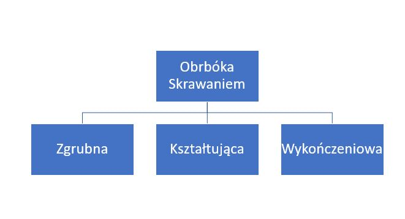
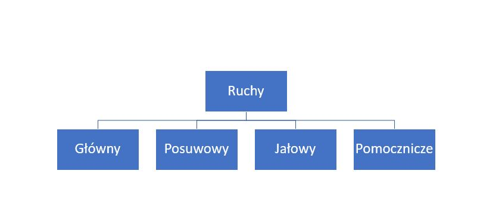

Obróka skrawaniem dzieli się na zgrubną, kształtującą oraz wykończeniową (rysunek nr 1)

Obróka zgrubna
Polega na usuwaniu dużych naddatków materiału najczęściej z przedmiotów nie poddanym wczesniej obróbce skrawaniem.
Obróbka kształcująca
Polega na uzyskaniu przedmiotu będącego pod względem kształów i wymiarów zbliżonego do przedmiotu gotowego, jest to proces , który przygotowywuje przedmiot do obróbki wykończeniowej.
Obróbka wykończeniowa
Polega na nadaniu obrabianemu przedmiotowi ściśle określonych wymiarów, kształtu, powierzchni.
Parametry skrawania
Wyróżniamy dwa główne parametry w obróbce skrawaniem
Kinematyczne
które opisują ruchy jakie wykonuje narzędzie oraz obrabiany przedmiot
Geometryczne
Opisują one wielkośc naddatku materiłu oraz wymiary warstwy skrawnwej
Rodzaje ruchów w obróbce skrawaniem
Ruchy występujące w czasie obróbki skrawaniem są nadawne urządzeni lub przedmiotowi obrabianemu przy użyciu obrabiarki służącej do wykonania procesu kształtowania przedmiotu za pomocą obróbki skrawaniem.

Ruch główny
Najczęściej jest to ruch obrotowy i warunkuje on istnienie procesu skrawania
Ruch Posuwowy
Ruch ten może być ciągły bądź również okresowy. Może być on prostoliowy lub złożony i co najważniejsze jest on niezbędny w przypadku konieczności usunięcia wartswy skrawanej z całej powierzchni obrabianego przedmiotu
Ruch Jałowy
Jest to jednem z rodzajów ruchu gównego, podczas wykonywania tego ruchu nie odbywa się skrawanie przedmiotu i ten typu ruchy występuje podczas procesów takich jak: struganie, dłutowanie, przeciągnie i przecianie. Co ważne, w przypadku, kiedy to ruch główny jest ruchem obrotowym to ruch jałowy nie występuje, przykładami obróbek bez ruchu jałowego są na przykład toczenie, frezowanie oraz wiecenie